from google.colab import drive
drive.mount('/content/drive')Mounted at /content/drive


Google Colab (or Colaboratary) is a cloud-based platform created by Google that offers an environment for sharing, running, and writing Python code within Google Drive. Colab runs Jupyter notebook files, and it comes with pre-installed popular Data Science and Machine Learning libraries and frameworks, such as TensorFlow, PyTorch, NumPy, pandas, and others.
Google Colab provides CPU, TPU, and GPU support. It enables real-time collaborative editing on a single notebook, much like the collaborative text editing functionality provided by Google Docs.
Colab has many Machine Learning and Data Science libraries preinstalled. Hence, we don’t need to install common libraries like scikit-learn, pandas, numpy, keras, pytorch, etc. We can directly import these libraries.
If we need to install additional libraries that are not part of Colab, we can use !pip install as in the following example.
!pip install -q matplotlib-vennWe can also use ! to run shell commands in Colab notebooks.
!lsIf you need to work with your own data in a Colab notebook (for example, to train a model on your own dataset), first upload the files to Google Drive and then mount Google Drive in the notebook. Note that Colab cannot directly access files stored on your computer’s local drive (such as the C: drive), but it can fully access any files you upload to Google Drive.
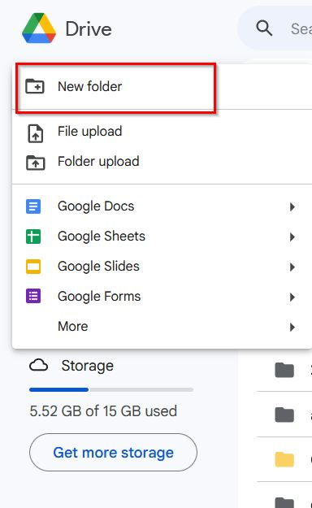
from google.colab import drive
drive.mount('/content/drive')Mounted at /content/driveConnect to Google Drive to permit the notebook to access Google Drive.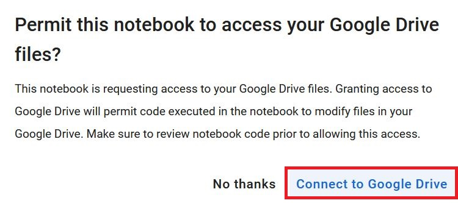
drive/My Drive/....import pandas as pd
df_IMDb = pd.read_csv('drive/MyDrive/Tutorial_5-Google_Colab/IMDB-Movies-Data.csv')
df_IMDb| Unnamed: 0 | Movie Name | Year of Release | Watch Time | Movie Rating | Metascore of movie | Gross | Votes | Description | |
|---|---|---|---|---|---|---|---|---|---|
| 0 | 0 | The Shawshank Redemption | 1994 | 142 | 9.3 | 82.0 | 28.34 | 27,77,378 | Over the course of several years, two convicts... |
| 1 | 1 | The Godfather | 1972 | 175 | 9.2 | 100.0 | 134.97 | 19,33,588 | Don Vito Corleone, head of a mafia family, dec... |
| 2 | 2 | The Dark Knight | 2008 | 152 | 9.0 | 84.0 | 534.86 | 27,54,087 | When the menace known as the Joker wreaks havo... |
| 3 | 3 | Schindler's List | 1993 | 195 | 9.0 | 95.0 | 96.9 | 13,97,886 | In German-occupied Poland during World War II,... |
| 4 | 4 | 12 Angry Men | 1957 | 96 | 9.0 | 97.0 | 4.36 | 8,24,211 | The jury in a New York City murder trial is fr... |
| ... | ... | ... | ... | ... | ... | ... | ... | ... | ... |
| 995 | 995 | Philomena | 2013 | 98 | 7.6 | 77.0 | 37.71 | 1,02,336 | A world-weary political journalist picks up th... |
| 996 | 996 | Un long dimanche de fiançailles | 2004 | 133 | 7.6 | 76.0 | 6.17 | 75,004 | Tells the story of a young woman's relentless ... |
| 997 | 997 | Shine | 1996 | 105 | 7.6 | 87.0 | 35.81 | 55,589 | Pianist David Helfgott, driven by his father a... |
| 998 | 998 | The Invisible Man | 1933 | 71 | 7.6 | 87.0 | NaN | 37,822 | A scientist finds a way of becoming invisible,... |
| 999 | 999 | Celda 211 | 2009 | 113 | 7.6 | NaN | NaN | 69,464 | The story of two men on different sides of a p... |
1000 rows × 9 columns
When you run a notebook, the panel in the upper right corner of the screen indicates whether the notebook is connected to a GPU or CPU.
For instance, the notebook in the following figure is connected to a Tesla T4 GPU.
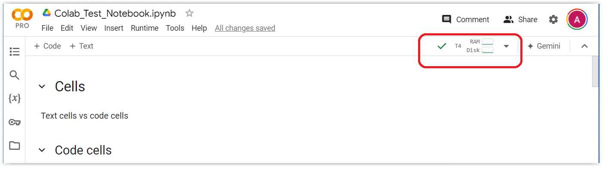
To change the runtime, click on the arrow in the upper right corner of your screen, as shown in the next figure, and from the menu select Change runtime type.
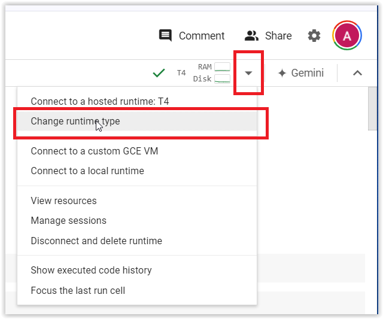
This will open the window shown in the following figure.
The Runtime type arrow allows us to select between Python3 and R programming languages. We can leave it at Python3.
Importantly, the Hardware accelerator field allows to select the hardware for the runtime. The options include CPU, three GPU options, and TPU. Note that these options are based on my subscription to Colab Pro. If you are using the free Colab version, you may see only T4 GPU available.
Also, for the Colab Pro subscription, there is a High-RAM button, which allows users to allocate additional RAM memory to the notebook. This feature can be helpful when working with large datasets, that exceed the available RAM memory. The standard RAM memory allocation in Colab is 12 GB, and the High-RAM option allocates 25 GB.
After you select the Hardware Accelerator, click Save.
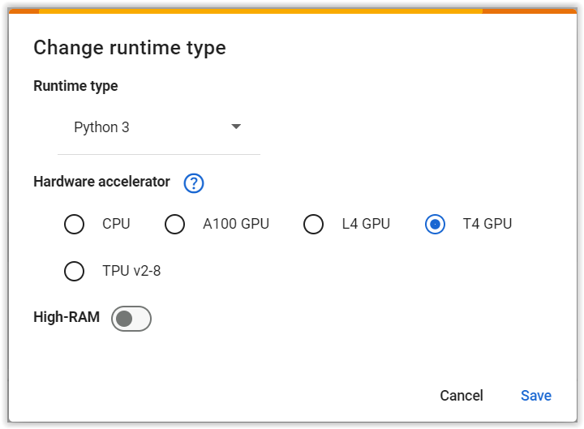
There are two other methods to change the runtime type in Colab.
Method 1:
Runtime → Change runtime type.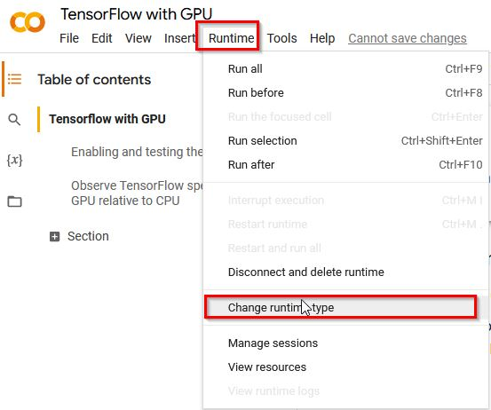
Method 2:
Edit → Notebook Settings.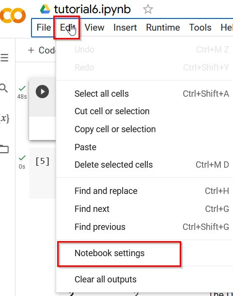
Also, if you have already run cells in a Colab notebook, changing the runtime type will interrupt the current session, reset the kernel, and clear all variables, imports, and temporary files. You will need to re-run all cells to restore the environment and reproduce any previous results.
When connected to a GPU, use the following code to check the details about the GPU.
!nvidia-smi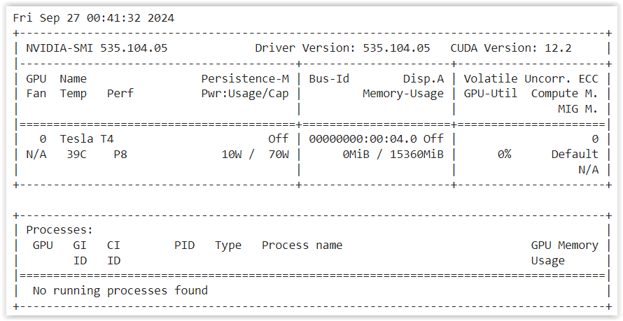
Also, the following code can be used to print whether the notebook is connected to GPU. If connected, it will print out “Found GPU at: /device:GPU:0”.
import tensorflow as tf
device_name = tf.test.gpu_device_name()
if device_name != '/device:GPU:0':
raise SystemError('GPU device not found')
print('Found GPU at: {}'.format(device_name))In the left pane, Colab provides several useful tools for managing the notebook environment.
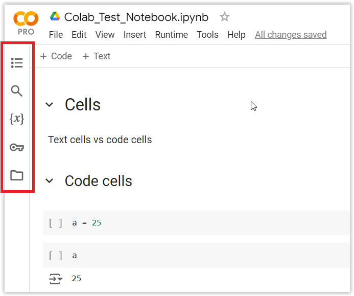
Paid Colab subsription plans provide better hardware, i.e., access to more powerful GPU, and more VRAM and RAM. They also have longer timeout sessions. For instance, Colab Pro+ allows you to run the script for up to 24 hours with the web browser closed.
With the free version (Pay As You Go), only T4 GPU are available, but sometimes there would be no GPU available. The free version has at most 12 hours sessions before timeout. In practice, for the free version, your session could be timed out and your script could be interrupted at any time. If you reconnect within the next 1-2 minutes, the session can be resumed, and otherwise, you will have to re-run your script.
For this course, it is recommended to use Colab Pro. Fortunately, Google recently announced that it will provide free access to Colab Pro for one year to all students in the USA and in other countries.
Please check the file “GPU Access” on the course page on Canvas (Modules section) for the link to request free access to Google Colab Pro.
Note that Colab Pro provides certain number of computational units, which allows to use more powerful GPUs (like A100) and High-RAM. For the purposes of this course, T4 GPUs are sufficient. Therefore, you don’t need to purchase any additional computational units, just use T4 GPU with either standard RAM of high RAM.
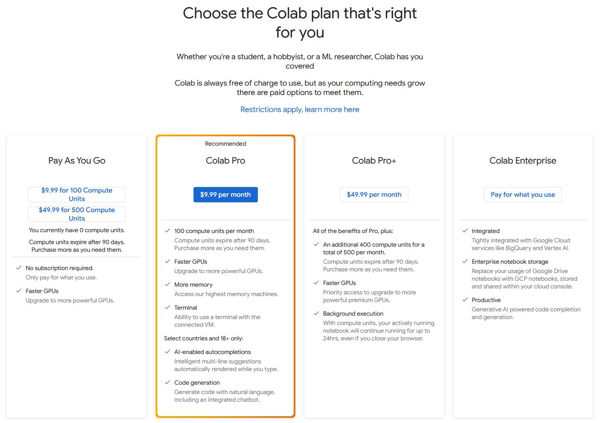
To monitor available and used resources, click on the arrow in the upper right corner of your screen, and select View resources. This will show resources stats, as in the following figure, including the current subsription, available computational units, used VRAM and RAM, and similar.
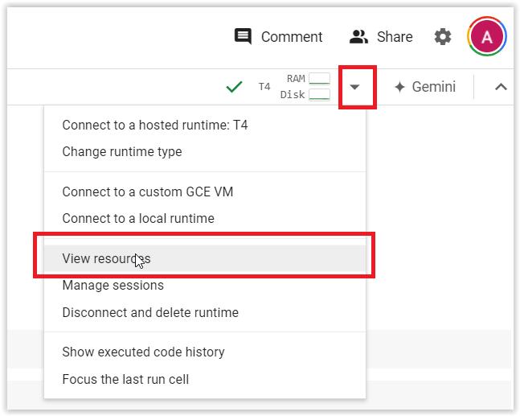
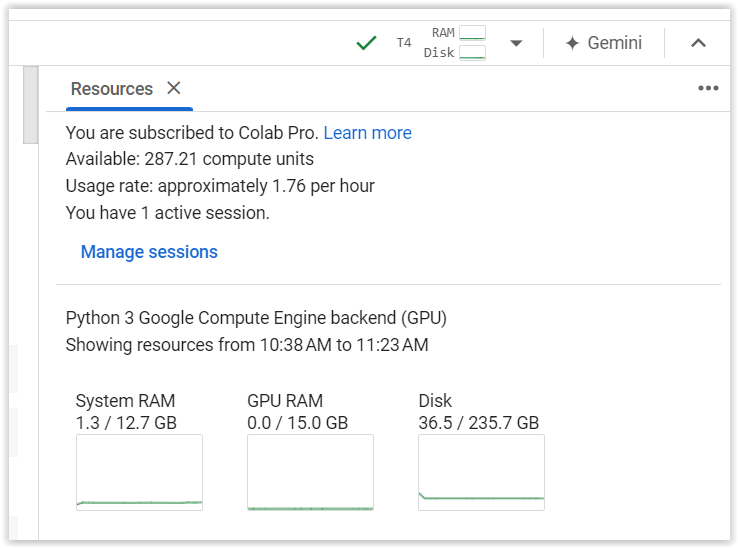
The welcome page of Colab offers basic tutorials about working with Jupyter notebooks, data science, and machine learning.
It includes:
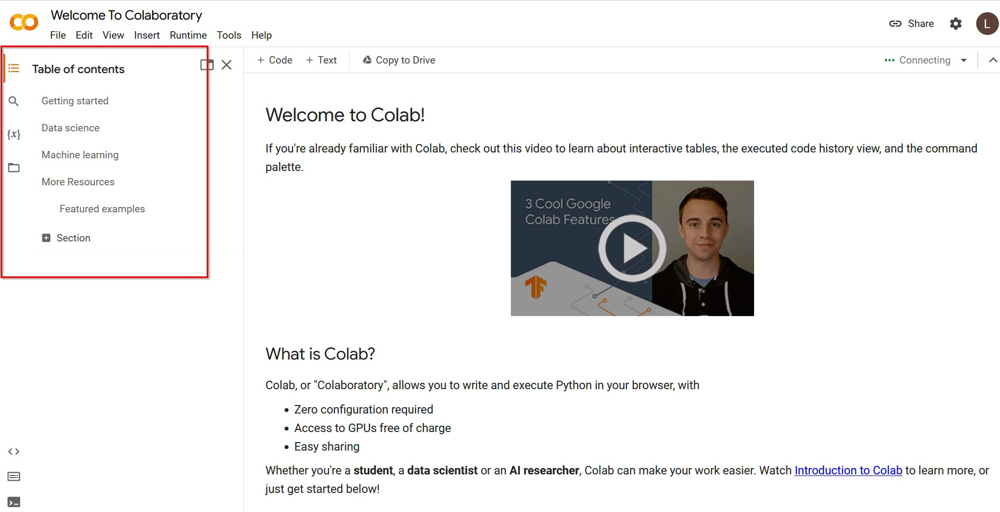